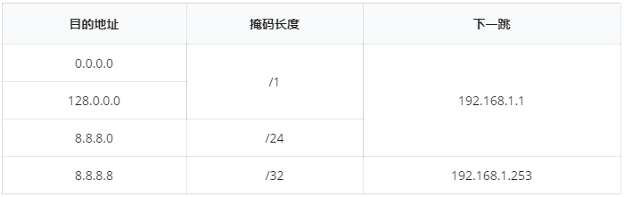

路由表查找是路由器在转发 IP 报文时的重要环节。通常路由表中的表项由目的地址、掩码、下一跳（Next Hop）地址和其他辅助信息组成。例如：

当路由器收到一个 IP 报文时，会将报文中的目的 IP 地址与路由表中的表项逐条进行比较，选择匹配且最明确的表项，将报文转发给该表项中指定的下一跳。
匹配的过程是将报文中的目的地址和表项中的目的地址分别转为二进制串，再查看表项中的掩码长度，若掩码长度为 $x$，则将两个二进制串的前 $x$ 位进行比较，如果相同则认为匹配。
所谓最明确是指在有多个表项匹配时，掩码长度最大的表项。也可以理解为匹配的二进制位最多的项。
IP 地址转为二进制串的操作是把地址中 $4$ 个整数（一定在 $0$ 到 $255$ 的范围内）分别转为$8$位二进制数，再顺序拼接起来，得到一个 $32$ 位的二进制串。例如，192.168.1.253转为二进制串后为11000000 10101000 00000001 11111101。
我们以报文的目的地址为8.8.8.8为例，说明其在上述路由表的匹配过程。
上表将地址均转为二进制串，并用红色标记出待比较的位（由掩码长度决定）。将红色部分与报文中的目的地址比较，可知0.0.0.0/1、8.8.8.0/24、8.8.8.8/32均能够匹配。路由器从中选取掩码长度最长（/32）的表项8.8.8.8/32，将报文转发给其对应的下一跳地址192.168.1.253。
在实际的核心路由器中，路由表通常较大（现在互联网的全局路由表已经接近 $60$ 万条记录），并且会随着新接入设备不断扩张。为了分析路由表变化对转发产生的影响，网络工程师想要知道一段时间内某个 IP 地址的路由表项选择发生了多少次变化（变化是指由于最明确匹配等因素选择了不同的表项，不考虑下一跳地址）。
 Comet OJ
Comet OJ